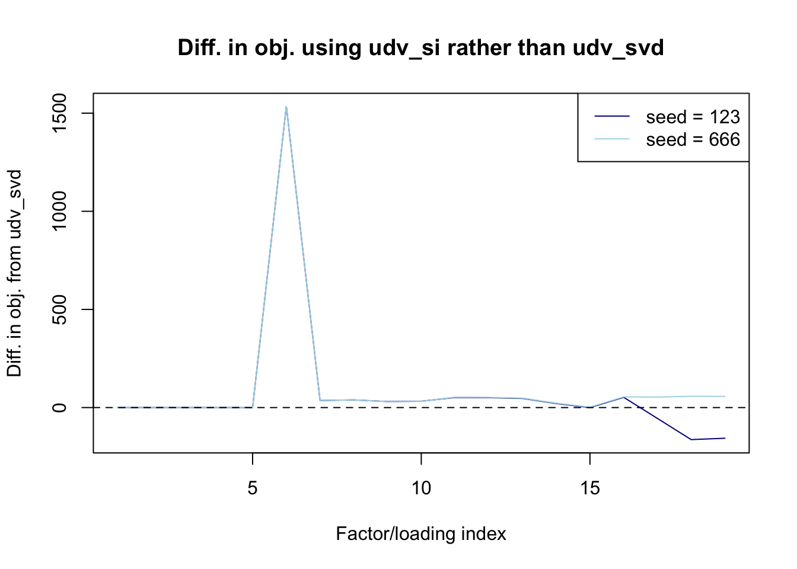

Comparing initialization functions
Jason Willwerscheid
7/25/2018
Last updated: 2018-07-25
workflowr checks: (Click a bullet for more information)-
✔ R Markdown file: up-to-date
Great! Since the R Markdown file has been committed to the Git repository, you know the exact version of the code that produced these results.
-
✔ Environment: empty
Great job! The global environment was empty. Objects defined in the global environment can affect the analysis in your R Markdown file in unknown ways. For reproduciblity it’s best to always run the code in an empty environment.
-
✔ Seed:
set.seed(20180714)The command
set.seed(20180714)was run prior to running the code in the R Markdown file. Setting a seed ensures that any results that rely on randomness, e.g. subsampling or permutations, are reproducible. -
✔ Session information: recorded
Great job! Recording the operating system, R version, and package versions is critical for reproducibility.
-
Great! You are using Git for version control. Tracking code development and connecting the code version to the results is critical for reproducibility. The version displayed above was the version of the Git repository at the time these results were generated.✔ Repository version: 6417d4e
Note that you need to be careful to ensure that all relevant files for the analysis have been committed to Git prior to generating the results (you can usewflow_publishorwflow_git_commit). workflowr only checks the R Markdown file, but you know if there are other scripts or data files that it depends on. Below is the status of the Git repository when the results were generated:
Note that any generated files, e.g. HTML, png, CSS, etc., are not included in this status report because it is ok for generated content to have uncommitted changes.Ignored files: Ignored: .DS_Store Ignored: .Rhistory Ignored: .Rproj.user/ Ignored: docs/.DS_Store Ignored: docs/figure/.DS_Store Untracked files: Untracked: data/greedy19.rds Untracked: data/greedy22.rds
Expand here to see past versions:
Introduction
The default function used to initialize a new factor/loading is udv_si, which is a simple wrapper to softImpute with option type = "als". We previously chose to use type = "als" rather than type = "svd" because initial results showed the former to be much faster. Here I investigate further, using a large GTEx dataset as an example.
Problem with type = “als”
I discovered an issue when investigating occasional large decreases in the FLASH objective. The dataset I use here is taken from MASH’s analysis of GTEx data. flash_add_greedy successfully adds 19 factors, then adds a 20th factor that improves the objective until a bad update occurs. This update increases the objective to such an extent that nullcheck erroneously removes the factor and FLASH terminates prematurely.
The last few lines of verbose output are as follows:
(...)
Objective:-1258100.51191229
Objective:-1258097.28313664
Objective:-1258093.37994353
Objective:-1258088.30966224
Objective:-1258081.1984392
Objective:-1258219.32382352
An iteration decreased the objective. This happens occasionally, perhaps due to numeric reasons. You could ignore this warning, but you might like to check out https://github.com/stephenslab/flashr/issues/26 for more details.performing nullcheck
objective from deleting factor:-1258152.21114343
objective from keeping factor:-1258219.32382352
factor zeroed outBut if I add 19 factors, then add the 20th separately, I get a much different result:
(...)
Objective:-1257665.05089993
Objective:-1257664.93935874
Objective:-1257664.72526429
Objective:-1257664.56199637
Objective:-1257664.52184646
Objective:-1257664.51611008
performing nullcheck
objective from deleting factor:-1258152.21114343
objective from keeping factor:-1257664.51611008
nullcheck complete, objective:-1257664.51611008The reason for the difference is that softImpute randomly initializes u when option type = "als" is used. On the second try, I simply got luckier with the initialization.
To reproduce the above results, run the following (it will take some time):
# devtools::install_github("stephenslab/flashr")
devtools::load_all("/Users/willwerscheid/GitHub/flashr")
# devtools::install_github("stephenslab/ebnm")
devtools::load_all("/Users/willwerscheid/GitHub/ebnm")
gtex <- readRDS(gzcon(url("https://github.com/stephenslab/gtexresults/blob/master/data/MatrixEQTLSumStats.Portable.Z.rds?raw=TRUE")))
strong <- t(gtex$strong.z)
# 20th factor zeroed out:
fl <- flash_add_greedy(strong, Kmax=50, verbose=TRUE)
# 20th factor successfully added:
fl2 <- flash_add_greedy(strong, Kmax=19, verbose=TRUE)
fl3 <- flash_add_greedy(strong, Kmax=1, f_init=fl2, verbose=TRUE)Questions for investigation
The above increase in the objective function points to a larger problem, which I will turn to in a subsequent investigation. Here, I want to revisit the choice of default init_fn. In particular, should we instead default to udv_svd (a simple wrapper to svd) when there is no missing data? Since softImpute(type = "svd") gives the same result as svd, and softImpute(type = "als") begins by calling svd on a random matrix anyway, using udv_svd can only speed things up (in addition to eliminating an annoying source of randomness). Next, when there is missing data, what are the differences between "svd" and "als" in terms of speed and the final objective attained? Preliminary results suggested that "als" would be much faster, but it would be useful to verify those results on the GTEx dataset.
Results: no missing data
Since the 20th factor causes a problem for udv_si, I fit 19 factors greedily. I run it once with udv_si_svd and udv_svd and I run it twice with udv_si (using a different seed for the second run).
To reproduce the results in this section, run the following (make sure to load the trackObj branch of flashr). Since the fits take several minutes each, I pre-run the code and then load the results from file.
# This block was run in advance.
# devtools::install_github("stephenslab/flashr", ref="trackObj")
devtools::load_all("/Users/willwerscheid/GitHub/flashr")
res.udv_si <- flash_add_greedy(strong, Kmax=19, verbose=TRUE)
res.udv_si_svd <- flash_add_greedy(strong, Kmax=19, init_fn="udv_si_svd", verbose=TRUE)
res.udv_svd <- flash_add_greedy(strong, Kmax=19, init_fn="udv_svd", verbose=TRUE)
# Change seed
res.udv_si666 <- flash_add_greedy(strong, Kmax=19, verbose=TRUE, seed=666)
all_res <- list(udv_si = res.udv_si,
udv_si666 = res.udv_si666,
udv_si_svd = res.udv_si_svd,
udv_svd = res.udv_svd)
saveRDS(all_res, "../data/init_fn/all_res.rds")# devtools::install_github("stephenslab/flashr", ref="trackObj")
devtools::load_all("/Users/willwerscheid/GitHub/flashr")Loading flashrgtex <- readRDS(gzcon(url("https://github.com/stephenslab/gtexresults/blob/master/data/MatrixEQTLSumStats.Portable.Z.rds?raw=TRUE")))
strong <- t(gtex$strong.z)
all_res <- readRDS("./data/init_fn/all_res.rds")Initialization time
The total time (in seconds) spent initializing factors is as follows.
init_t <- lapply(all_res, function(res) {unlist(res$init_t)})
lapply(init_t, sum)$udv_si
[1] 13.78793
$udv_si666
[1] 12.13256
$udv_si_svd
[1] 8.962511
$udv_svd
[1] 2.968564As expected, udv_svd is fastest, but there is only about 10 seconds difference between udv_svd and udv_si (the slowest method). This difference is not hugely important given that the overall fit takes several minutes.
The initialization time per factor is as follows.
K <- length(init_t[[1]])
data <- data.frame(t = unlist(init_t),
init_fn = rep(names(init_t), each=K))
data$init_fn[data$init_fn == "udv_si666"] <- "udv_si"
data$init_fn <- factor(data$init_fn)
boxplot(t ~ init_fn, data, ylim=c(0, 2),
main="Initialization time (s)")
Expand here to see past versions of nomissing_time-1.png:
| Version | Author | Date |
|---|---|---|
| 131dd85 | Jason Willwerscheid | 2018-07-25 |
Number of iterations
Since the optimization step takes much more time than the initialization step, I check to see whether any initialization method is “better” in the sense that it requires less iterations to optimize. (I suppress results for udv_si_svd because they are identical to udv_svd.)
niter <- lapply(all_res,
function(res) {
sapply(res$obj, function(i) {length(i$after_tau)})
})
niter$udv_si_svd <- NULL
K <- length(niter[[1]])
data <- data.frame(niter = unlist(niter),
init_fn = rep(names(niter), each=K))
data$init_fn[data$init_fn == "udv_si666"] <- "udv_si"
data$init_fn <- factor(data$init_fn)
boxplot(niter ~ init_fn, data, ylim=c(0, 120),
main="Number of iterations per factor")Expand here to see past versions of nomissing_niter-1.png:
| Version | Author | Date |
|---|---|---|
| 131dd85 | Jason Willwerscheid | 2018-07-25 |
These two plots look very similar to me.
Objective attained
There is some variation in the final objective. softImpute(type = "als") can do better than svd, but it can also do worse.
lapply(all_res, function(res) {flash_get_objective(strong, res$f)})$udv_si
[1] -1258152
$udv_si666
[1] -1257939
$udv_si_svd
[1] -1257996
$udv_svd
[1] -1257996The improvement in the objective function per factor is as follows. (Again, I suppress results for udv_si_svd because they are identical to udv_svd.)
par(mfrow=c(2, 2))
final.obj <- lapply(all_res,
function(res) {
sapply(res$obj, function(obj) {
max(unlist(obj))
})
})
final.obj$udv_si_svd <- NULL
diff.by.factor <- lapply(final.obj,
function(obj) {
obj[2:length(obj)] - obj[1:(length(obj) - 1)]
})
for (k in 1:length(diff.by.factor[[1]])) {
data = sapply(diff.by.factor, function(diff) { diff[k] })
barplot(data,
main=paste("After adding factor", k + 1),
col=c("blue", "blue", "red"))
}
Expand here to see past versions of nomissing_objeach-1.png:
| Version | Author | Date |
|---|---|---|
| 131dd85 | Jason Willwerscheid | 2018-07-25 |

Expand here to see past versions of nomissing_objeach-2.png:
| Version | Author | Date |
|---|---|---|
| 131dd85 | Jason Willwerscheid | 2018-07-25 |

Expand here to see past versions of nomissing_objeach-3.png:
| Version | Author | Date |
|---|---|---|
| 131dd85 | Jason Willwerscheid | 2018-07-25 |

Expand here to see past versions of nomissing_objeach-4.png:
| Version | Author | Date |
|---|---|---|
| 131dd85 | Jason Willwerscheid | 2018-07-25 |

Expand here to see past versions of nomissing_objeach-5.png:
| Version | Author | Date |
|---|---|---|
| 131dd85 | Jason Willwerscheid | 2018-07-25 |
Results: missing data
I delete 5% of the entries in the dataset and repeat the experiment. Since svd cannot handle missing data, I only compare udv_si and udv_si_svd.
set.seed(1)
missing <- rbinom(length(strong), 1, prob=0.05)
strong.missing <- strong
strong.missing[missing] <- NA
fl_data <- flash_set_data(strong.missing)# This block was run in advance.
res.missing.udv_si <- flash_add_greedy(fl_data, Kmax=19, verbose=TRUE)
res.missing.udv_si666 <- flash_add_greedy(fl_data, Kmax=19, verbose=TRUE, seed=666)
res.missing.udv_si_svd <- flash_add_greedy(fl_data, Kmax=19, init_fn="udv_si_svd", verbose=TRUE)
all_missing <- list(udv_si = res.missing.udv_si,
udv_si666 = res.missing.udv_si666,
udv_si_svd = res.missing.udv_si_svd)
saveRDS(all_missing, "../data/init_fn/all_missing.rds")all_missing <- readRDS("./data/init_fn/all_missing.rds")Initialization time
The total time (in seconds) spent initializing factors is as follows.
init_t <- lapply(all_missing, function(res) {unlist(res$init_t)})
lapply(init_t, sum)$udv_si
[1] 15.04474
$udv_si666
[1] 11.99873
$udv_si_svd
[1] 7.355583The time per factor is as follows.
K <- length(init_t[[1]])
data <- data.frame(t = unlist(init_t),
init_fn = rep(names(init_t), each=K))
data$init_fn[data$init_fn == "udv_si666"] <- "udv_si"
data$init_fn <- factor(data$init_fn)
boxplot(t ~ init_fn, data, ylim=c(0, 2),
main="Initialization time (s)")Expand here to see past versions of missing_time-1.png:
| Version | Author | Date |
|---|---|---|
| 131dd85 | Jason Willwerscheid | 2018-07-25 |
Interestingly, udv_si_svd seems to be reliably faster. This result contradicts our earlier results showing that using option type = "als" with softImpute was faster than using option type = "svd". I’m not sure whether any code has changed in the meantime, or whether our preliminary investigations were simply faulty.
Number of iterations, objective attained
With only 5% of data missing, the number of iterations per factor and the increase in objective per factor were nearly identical to the above, so I have suppressed them here.
To verify for yourself, run the following lines.
niter <- lapply(all_missing,
function(res) {
sapply(res$obj, function(i) {length(i$after_tau)})
})
K <- length(niter[[1]])
data <- data.frame(niter = unlist(niter),
init_fn = rep(names(niter), each=K))
data$init_fn[data$init_fn == "udv_si666"] <- "udv_si"
data$init_fn <- factor(data$init_fn)
boxplot(niter ~ init_fn, data, ylim=c(0, 120),
main="Number of iterations per factor")lapply(all_missing, function(res) {flash_get_objective(fl_data, res$f)})par(mfrow=c(2, 2))
final.obj <- lapply(all_missing,
function(res) {
sapply(res$obj, function(obj) {
max(unlist(obj))
})
})
diff.by.factor <- lapply(final.obj,
function(obj) {
obj[2:length(obj)] - obj[1:(length(obj) - 1)]
})
for (k in 1:length(diff.by.factor[[1]])) {
data = sapply(diff.by.factor, function(diff) { diff[k] })
barplot(data,
main=paste("Improvement after adding factor", k + 1),
col=c("blue", "blue", "red"))
}Conclusions
There does not seem to be any advantage to using softImpute when there is no missing data. Indeed, udv_si is relatively slow and has the additional disadvantage that results depend upon a random initialization. For this reason, I recommend changing the default init_fn to udv_svd when there is no missing data.
More surprisingly, I was unable to verify earlier results that concluded that udv_si (that is, softImpute with option type = "als") is faster than udv_si_svd (softImpute with option type = "svd"). On the contrary, udv_si_svd appears to be slightly faster, and again has the advantage that it is not random. Further, the algorithm is somewhat simpler to understand. Thus I recommend setting the default init_fn to udv_si_svd when data is missing.
Session information
sessionInfo()R version 3.4.3 (2017-11-30)
Platform: x86_64-apple-darwin15.6.0 (64-bit)
Running under: macOS High Sierra 10.13.1
Matrix products: default
BLAS: /Library/Frameworks/R.framework/Versions/3.4/Resources/lib/libRblas.0.dylib
LAPACK: /Library/Frameworks/R.framework/Versions/3.4/Resources/lib/libRlapack.dylib
locale:
[1] en_US.UTF-8/en_US.UTF-8/en_US.UTF-8/C/en_US.UTF-8/en_US.UTF-8
attached base packages:
[1] stats graphics grDevices utils datasets methods base
other attached packages:
[1] flashr_0.5-12
loaded via a namespace (and not attached):
[1] Rcpp_0.12.17 pillar_1.2.1 plyr_1.8.4
[4] compiler_3.4.3 git2r_0.21.0 workflowr_1.0.1
[7] R.methodsS3_1.7.1 R.utils_2.6.0 iterators_1.0.9
[10] tools_3.4.3 testthat_2.0.0 digest_0.6.15
[13] tibble_1.4.2 evaluate_0.10.1 memoise_1.1.0
[16] gtable_0.2.0 lattice_0.20-35 rlang_0.2.0
[19] Matrix_1.2-12 foreach_1.4.4 commonmark_1.4
[22] yaml_2.1.17 parallel_3.4.3 ebnm_0.1-12
[25] withr_2.1.1.9000 stringr_1.3.0 roxygen2_6.0.1.9000
[28] xml2_1.2.0 knitr_1.20 devtools_1.13.4
[31] rprojroot_1.3-2 grid_3.4.3 R6_2.2.2
[34] rmarkdown_1.8 ggplot2_2.2.1 ashr_2.2-10
[37] magrittr_1.5 whisker_0.3-2 backports_1.1.2
[40] scales_0.5.0 codetools_0.2-15 htmltools_0.3.6
[43] MASS_7.3-48 assertthat_0.2.0 softImpute_1.4
[46] colorspace_1.3-2 stringi_1.1.6 lazyeval_0.2.1
[49] munsell_0.4.3 doParallel_1.0.11 pscl_1.5.2
[52] truncnorm_1.0-8 SQUAREM_2017.10-1 R.oo_1.21.0 This reproducible R Markdown analysis was created with workflowr 1.0.1